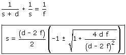
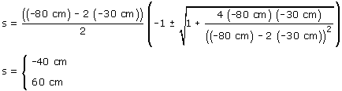
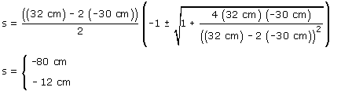

La posición de la imagen está contada a partir
de la posición del objeto: s' = s + d.
d será negativa si la imagen está a la izquierda del objeto
(Más lejos del espejo que el objeto) y será positiva si
la imagen está a la derecha del objeto (Más cerca del espejo
que el objeto)
Datos: s' = s + d, d = -80 | +32 cm, f = 60 cm / 2
Incógnitas: s

Sustituyendo los datos del problema:

La solución s = +60
no sirve porque el objeto tiene que estar a la izquierda del espejo.
La solución valida es: s = -40 cm, s' = -40 + (-80) = -120
cm
Construcción
gráfica

La solución s = +60 no sirve porque
el objeto tiene que estar a la izquierda del espejo.
La solución valida es: s = -40 cm, s' = -40 + (-80)
= -120 cm
Construcción gráfica
La solución s = -12 no vale porque entonces
s' = -12 + 32 = +20, la imagen se formaría
detrás del espejo y entonces no sería real.
La solución valida es s = -80 cm, s' =
-80 + 32 = -48 cm